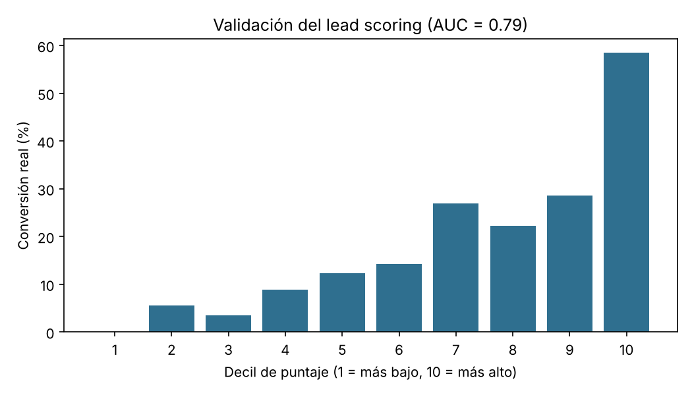

Lead scoring y calificación MQL / SQL
Modelo en Python que puntúa leads de 0 a 100 según su probabilidad de convertir y los clasifica como SQL, MQL o nutrición con reglas de negocio ajustables. Incluye un script que califica automáticamente los leads exportados de un formulario o un CRM. Con datos sintéticos, los SQL convierten seis veces más que los leads en nutrición (AUC 0,79).
